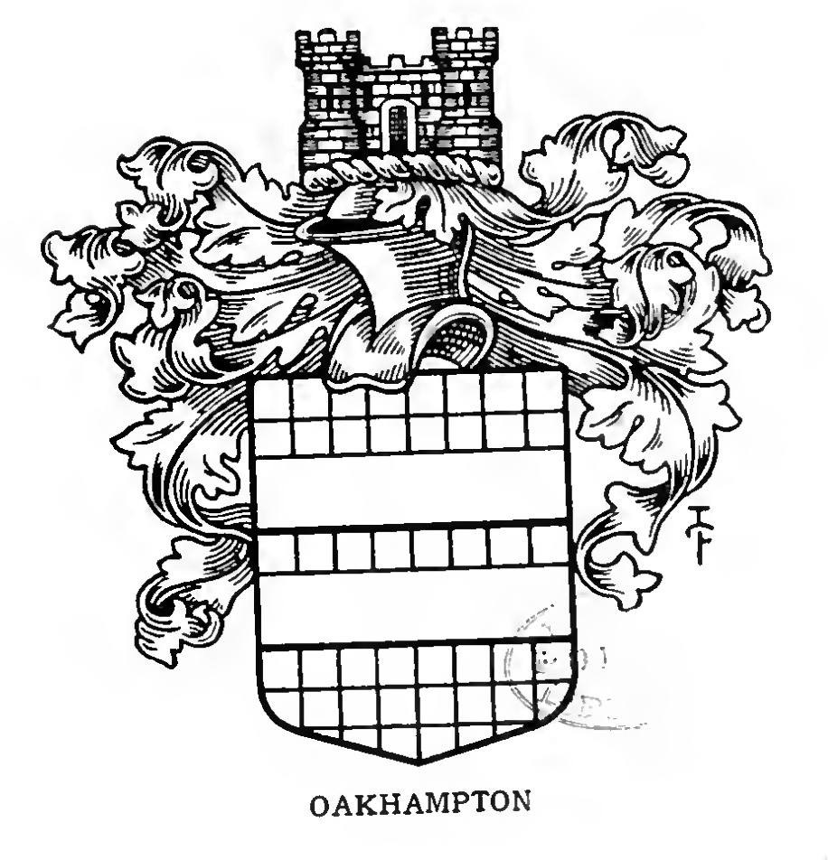

<p class="content"><span class="entry">OKEHAMPTON. </span><a href="../o/oakhampton.html">See Oakhampton</a>.</p>

<p class="reference">Original Source <a href="https://archive.org/stream/bookofpublicarms00foxd/bookofpublicarms00foxd_djvu.txt">bookofpublicarms00foxd_djvu.txt</a> near line 19222.</p>

<figure class="public-arms-illustration">

<figcaption>OKEHAMPTON.</figcaption>
</figure>
